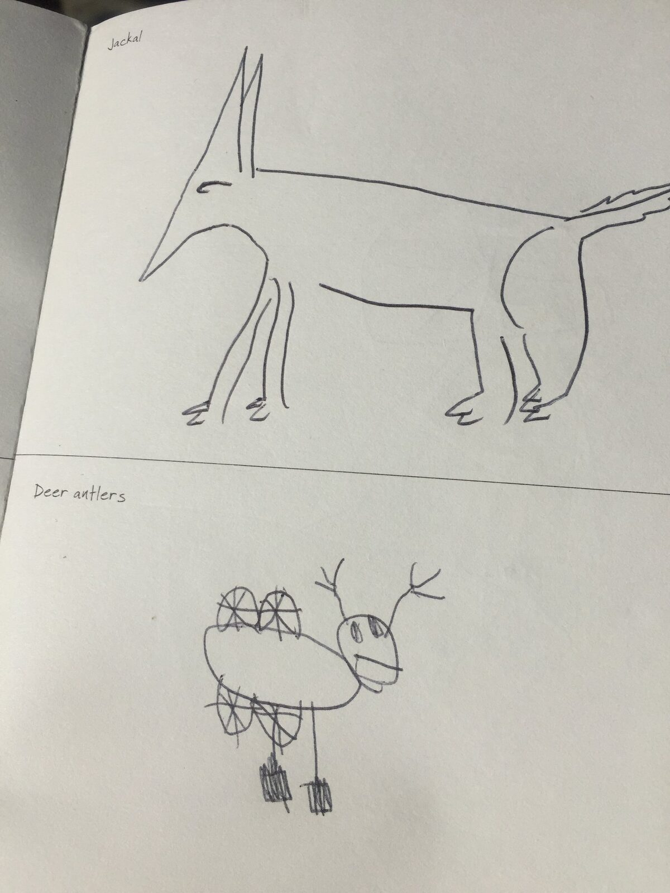

Browsing one of my favourite places on earth - the bookstore - generates yet another inspiring resource for therapy!

Some time ago I came across two awesome books, 300 Drawing prompts and 300 Writing prompts. My initial thought was: These will be perfect for me! What an awesome way to be creative while waiting at the tax- or doctors office or listening to those awesome tunes you hear when you would just like to speak to a representative on the phone (we’ve all been there, right?).
And oh my, it works! The books basically give you a prompt on what to draw or write in the space given. Like e.g. 300 Drawing prompts: Bull’s eye, Bouquet of roses or Something upside down. You would think it is not a big deal, but for a not drawer like me it is!
We SLPs always encourage our patients to use pen and paper, to draw cues, hints and objects related to the idea when it is hard to find the right words. I often see myself being stuck to a few examples I feel comfortable with. How long has it been since I drew a Bonfire? And how hard was it at first to actually pick up a pencil and try to draw a bonfire? And now, because the book prompted me, I did! And it made me feel awesome. Not a masterpiece, but a bonfire I was happy with.

I tried this side by side with a patient and we had so much fun! We chose to show you our masterpieces of a Jackal and Deer antlers. Not bad, eh?
These prompts are great for getting a patient feel comfortable with drawing and also using their non dominant hand for pencil-skills in general. Drawing together is a great way of being together too, so why not have the patient do this with the spouse or a friend? You draw one, I draw one is an easy way of being outside your comfort zone together - the place where all new adventures begin (like a new, enriched way of communicating with a loved one)!
300 Writing Prompts is another awesome find for our higher functioning adult patients. It is a nice, compact workbook to get your patient going with writing. The book prompts you with ideas and has limited space for writing on that topic (how awesome for working on planning ahead, staying on topic, forming meaningful entities with a beginning and an end). Some of the tasks are more complex e.g. Complete the thought: “I wish I had paid more attention when…” and some are more straightforward, e.g. “Write about a time you broke something”. Great for homework and also to be used in therapy with a time constraint. I would also not pass the opportunity of using the book yourself, what a feeling when completing a writing task!
I absolutely love these books for therapy and for myself. When I have some time to burn I find myself occasionally reaching for one of them instead of my phone and end up doing something creative and soothing instead of just spending 20 minutes lost on my phone. And, maybe not so surprisingly, completing something creative makes you feel great. Who knew?
These books were Published by Piccadilly (USA) Inc. in 2015 and I found them at Barnes & Noble